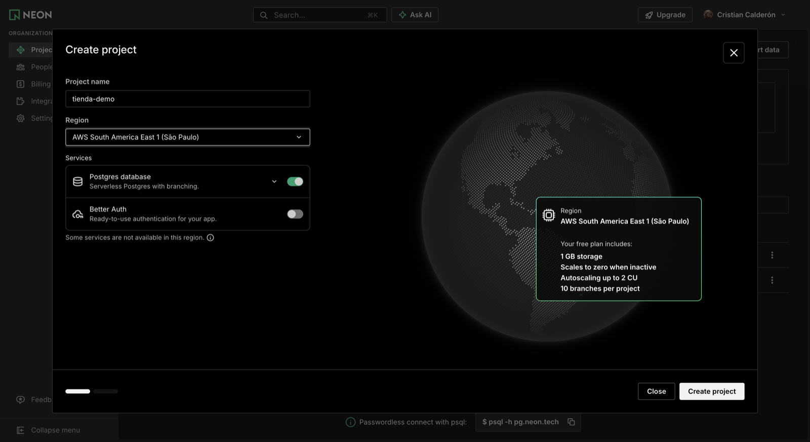
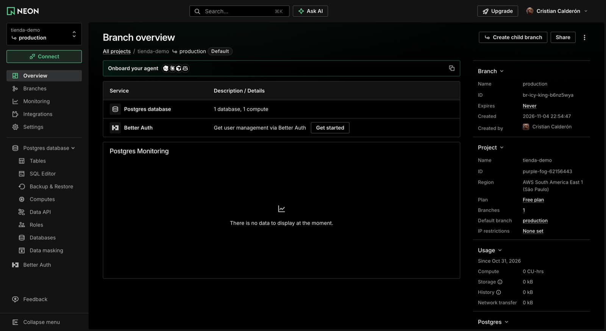
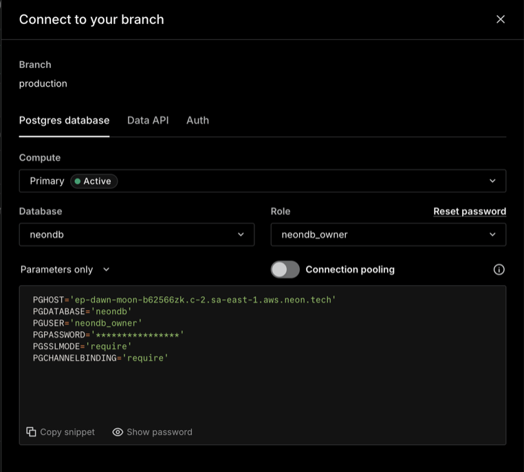
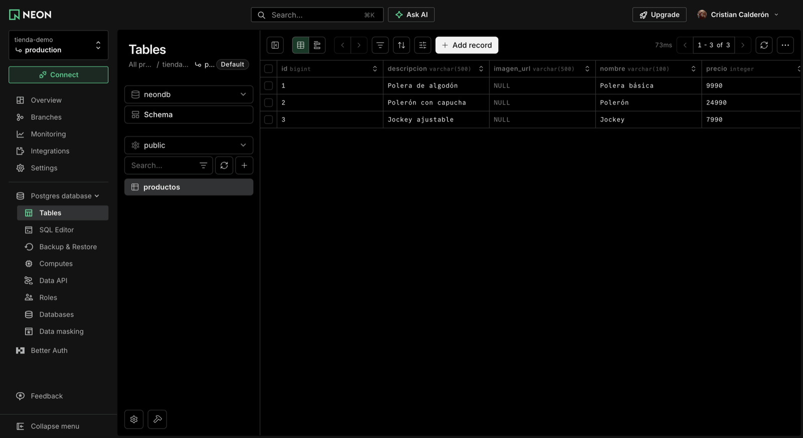
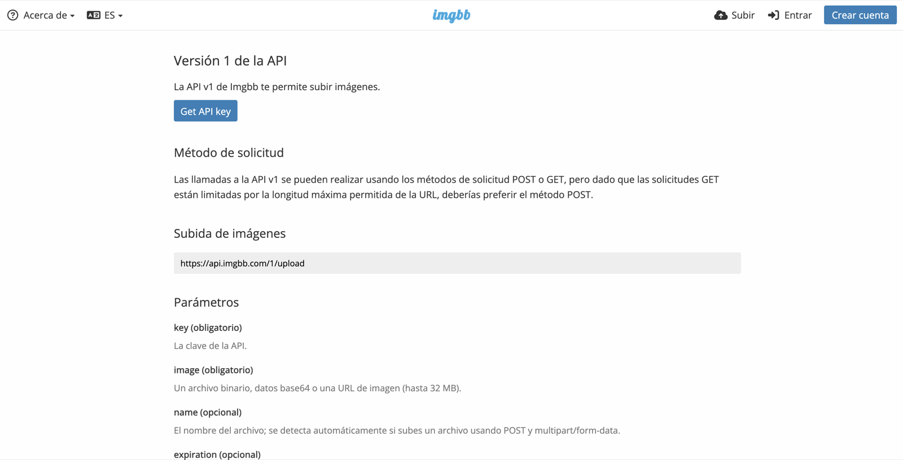

Tu tienda en la nube
Clase 1: la base de datos sale de tu PC y pasa a internet (Neon), el backend Spring Boot se conecta a ella y las fotos de los productos van a ImgBB.
Agenda: 3 bloques
| Bloque 1 | ¿Qué es la nube? Y por qué las claves nunca van en GitHub. |
| Bloque 2 | Neon + Spring Boot. Creamos la base en internet y conectamos el backend, paso a paso. |
| Bloque 3 | ImgBB. Subimos las fotos y guardamos solo su dirección. Actividad en equipo. |
Todo lo de hoy, con capturas, está en el README del repositorio github.com/Umbingelelo/tienda-neon.
El caso semestral: la tienda online
Parcial 1
Sitio en HTML, CSS y JS.
Parcial 2
Frontend con framework + pruebas (Jasmine/Karma).
Parcial 3 ← ahora
Frontend + backend Spring + base de datos.
Hasta ahora la base de datos vivía en tu computador. Hoy pasa a vivir en internet.
¿Qué es "la nube"?
Usar computadores de otra empresa a través de internet. Se paga por lo que usas, o es gratis con límites.
En mi PC (local)
- Si apago el PC, la tienda se cae
- Solo yo veo los datos
- Yo instalo y cuido la base de datos
En la nube
- Funciona 24/7, desde cualquier lugar
- Todo el equipo usa la misma base
- La empresa la instala, respalda y actualiza
¿Cuánto hace la empresa por ti?
IaaS 🏗️
Arriendas un terreno.
Te dan un servidor vacío; tú instalas todo.
Ej.: AWS EC2
PaaS 🛋️
Arriendas un depto amoblado.
Tú solo pones tus cosas: tu código o tus datos.
Ej.: Neon, Render, Vercel
SaaS 🏨
Te quedas en un hotel.
Solo usas el servicio.
Ej.: Gmail, ImgBB
Lo que vamos a armar
La base de datos guarda texto, incluida esa URL. Nunca guarda la foto.
PostgreSQL = motor de base de datos, como MySQL u Oracle. · URL = una dirección web, como https://…
¿Por qué no guardar la foto en la base?
- Las fotos pesan mucho: 3 MB × 500 productos = 1,5 GB. El plan gratis de Neon trae 1 GB.
- Cada vez que alguien pide la lista de productos, viajarían megas de fotos.
- ImgBB entrega las fotos desde servidores repartidos por el mundo (un CDN), mucho más rápido.
Las claves nunca van en GitHub
Para usar Neon e ImgBB necesitas credenciales (usuario y clave):
- usuario y clave de la base de datos
- API key de ImgBB
Si las subes a un repositorio público, unos programas automáticos (bots) las encuentran en minutos y pueden borrar o robar tus datos.
❌ Mal: la clave escrita en el código
spring.datasource.password=npg_AbC123xyz✅ Bien: el código solo dice "búscala afuera"
spring.datasource.password=${DB_PASSWORD}API key = la contraseña para usar el servicio de otra empresa desde tu programa.
El archivo .env
# .env → queda SOLO en tu PC
DB_URL=jdbc:postgresql://ep-…neon.tech/neondb?sslmode=require
DB_USERNAME=neondb_owner
DB_PASSWORD=npg_AbC123xyz# application.properties → sí se sube
spring.datasource.url=${DB_URL}
spring.datasource.username=${DB_USERNAME}
spring.datasource.password=${DB_PASSWORD}${DB_URL}significa: "aquí va el valor deDB_URLque está en.env"..envaparece en.gitignore, la lista de archivos que Git no sube.- Al equipo se lo pasan por WhatsApp o Teams.
¿Qué es Neon?
- Un PostgreSQL en internet, gratis y sin tarjeta de crédito.
- Si nadie lo usa, se duerme y despierta con la primera consulta. Por eso la primera vez puede tardar unos segundos.
- Tiene un SQL Editor: una página donde escribes consultas SQL.
- Solo acepta conexiones cifradas (por eso más adelante verás
sslmode=require).
Cifrada = los datos viajan encriptados; nadie en el camino puede leer tu clave.
Crear el proyecto en Neon
- Entra a console.neon.tech con GitHub o Google.
- New project.
- Nombre:
tienda-<equipo> - Region: AWS South America East 1 (São Paulo).
- Deja solo Postgres activado → Create project → Go to project.

El panel del proyecto
Arriba dice Branch overview: es la pantalla correcta. (Branch = rama, una copia de tu base; la principal se llama production.)
Neon ya creó la base neondb y el usuario neondb_owner.
Vamos a usar 3 botones: Connect, Tables y SQL Editor.

Copiar los datos de conexión
- Connect.
- Apaga Connection pooling: debe quedar gris.
- Menú Connection string ▾ → Parameters only.
- Copy snippet: copia todo, con la clave real. Pégalo en un bloc de notas.

Pasar los datos al formato de Java
PGHOST='ep-dawn-moon-b62566zk.c-2.sa-east-1.aws.neon.tech' PGDATABASE='neondb'
PGUSER='neondb_owner' PGPASSWORD='npg_AbC123xyz' PGCHANNELBINDING='require' ← no se usaSe convierte en 3 líneas, sin comillas:
DB_URL=jdbc:postgresql://ep-dawn-moon-b62566zk.c-2.sa-east-1.aws.neon.tech/neondb?sslmode=require
DB_USERNAME=neondb_owner
DB_PASSWORD=npg_AbC123xyzDB_URL = jdbc:postgresql:// + PGHOST + / + PGDATABASE + ?sslmode=require
jdbc: · hay una / antes de neondb · termina en ?sslmode=require (sin &channel_binding) · sin comillas · la clave incluye el npg_.JDBC = la forma en que Java se conecta a una base de datos. · host = la dirección del servidor de la base.
Abrir el proyecto en IntelliJ
- GitHub →
Umbingelelo/tienda-neon→ botón verde Code → Download ZIP → Extraer todo. - ⚠️ Windows crea dos carpetas iguales, una dentro de otra. La correcta es la de adentro, la que tiene
pom.xml. - IntelliJ → File → Open → esa carpeta → Trust Project.
- Espera a que termine la barra de abajo (está descargando las librerías).
- Si arriba dice Project JDK is not defined → Setup SDK → 17 o superior (o Download JDK).
Usa una carpeta sin espacios ni tildes, fuera de OneDrive, por ejemplo C:\dev\: mueve ahí la carpeta de adentro (la que tiene pom.xml). Puedes renombrarla tienda-neon. Quien sepa Git puede usar git clone.
Crear el .env dentro de IntelliJ
- Clic derecho en la carpeta principal del proyecto (la que tiene
pom.xml) → New → File. - Nombre:
.env(con el punto al comienzo) → Enter. - Pega las 3 líneas que armaste en "Pasar los datos al formato de Java" y guarda.
❌ Bloc de notas
Lo guarda como .env.txt y Windows oculta el .txt. Spring no lo encuentra.
❌ Editar .env.example
Es solo una plantilla. El que vale es .env.
Ejecutar
Abre TiendaNeonApplication.java y presiona el ▶ verde al lado de main.
¿Por terminal? En Windows es .\mvnw.cmd spring-boot:run, con .\ adelante. En Mac es ./mvnw spring-boot:run.
Funcionó si ves estas dos líneas:
HikariPool-1 - Added connection … ← se conectó a Neon
Started TiendaNeonApplication … ← API listaLuego abre en el navegador:http://localhost:8080/api/productos
localhost = tu propio PC. · 8080 = el puerto, la "puerta" donde escucha la API.
Solo 3 piezas
| Producto.java entidad | La clase que se vuelve tabla. Spring crea la tabla productos en Neon solo. |
| ProductoRepository.java repositorio | Guarda, busca y borra sin escribir SQL. |
| ProductoController.java controller | Las URL /api/productos: GET (leer), POST (crear), PUT (cambiar), DELETE (borrar). |
imagenUrl en Java → imagen_url en la base (todo en minúsculas y con _). En SQL se escribe imagen_url.¿Los datos están en la nube?
Neon → Tables → productos. Ahí están los 3 productos de ejemplo. NULL = vacío: todavía no tienen foto.
La prueba de fuego
Otro integrante descarga el mismo proyecto, crea su .env con los mismos datos, presiona ▶ y ve los mismos productos.

Busca la primera línea que diga Caused by:
| Mensaje | Qué hacer |
|---|---|
Could not resolve placeholder 'DB_URL' | No hay .env, se llama .env.txt o no está junto a pom.xml |
password authentication failed | Vuelve a Copy snippet en Neon |
claims to not accept jdbcUrl | A DB_URL le falta el jdbc: al comienzo |
Port 8080 was already in use | Detén el otro programa con el ■ rojo, o agrega PORT=8081 al .env |
'mvnw.cmd' no se reconoce / JAVA_HOME | Usa el ▶ de IntelliJ |
| La primera vez tarda | Neon estaba dormido. Es normal. |
ImgBB: un servicio para guardar fotos
- Crea una cuenta en imgbb.com.
- Entra a api.imgbb.com → Get API key.
- Guarda esa key como cualquier clave: no la subas a GitHub.

API = una URL a la que tu programa le pide cosas. La de ImgBB recibe una foto y responde con su URL.
Subir la foto
- POST
https://api.imgbb.com/1/upload?key=TU_KEY - Body → form-data
- Key:
image→ cambia Text por File → Select Files - Send
De la respuesta, dentro de "data", copia "url":
"data": {
"url_viewer": "https://ibb.co/abc123", ← NO
"url": "https://i.ibb.co/abc123/polera.jpg" ← ESTA
…La correcta empieza con https://i.ibb.co/. Ábrela: debes ver solo la foto.
Usa Postman de escritorio. La versión web no llega a localhost.
PUT reemplaza el producto completo
❌ Solo la URL → 400
{ "imagenUrl": "https://i.ibb.co/…" }Falta el nombre, que es obligatorio. Y lo que no envías se borra.
✅ El truco
- GET
…/api/productos/1→ copia la respuesta - Cambia solo
"imagenUrl": nullpor tu URL - PUT
…/api/productos/1→ Body → raw → JSON → pega → Send
Verifica en Neon → SQL Editor: SELECT id, nombre, imagen_url FROM productos;
Ojo con la API key en el frontend
Para la clase
Frontend → ImgBB directo. Es simple, pero la key se ve en el navegador (F12 → pestaña Network).
En una app real
Frontend → tu backend → ImgBB. La key vive en el .env del servidor y nunca llega al navegador.
Actividad: clase1/ACTIVIDAD.md
Repártanse los roles: Neon (Parte A y capturas de Neon) · Backend (Partes B y C) · Fotos (Parte D)
- A: la base del equipo en Neon (
tienda-<equipo>) - B: el backend conectado con
.env+ un compañero ve los mismos datos - C: 1 atributo propio de su tienda + 5 productos reales + probar que responde 400
- D: 5 fotos en ImgBB y sus URLs guardadas con PUT
- Desafío: mostrar los productos con su foto en el frontend
Próxima clase
- El frontend lee, crea y edita productos con foto a través de la API.
- Publicamos el backend y el frontend en la nube.
.env a mano: la próxima clase partimos desde ahí.CORS (lo veremos la próxima clase) = regla del navegador que bloquea que una página llame a una API de otro puerto si la API no la autoriza.